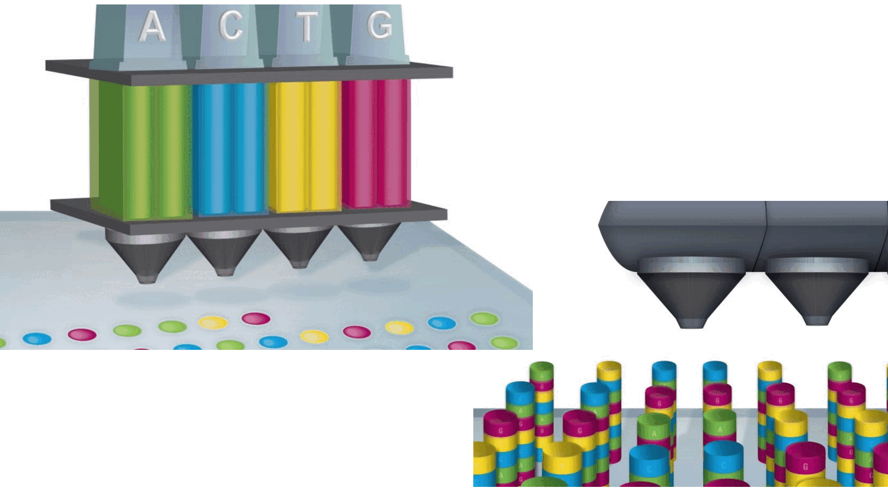
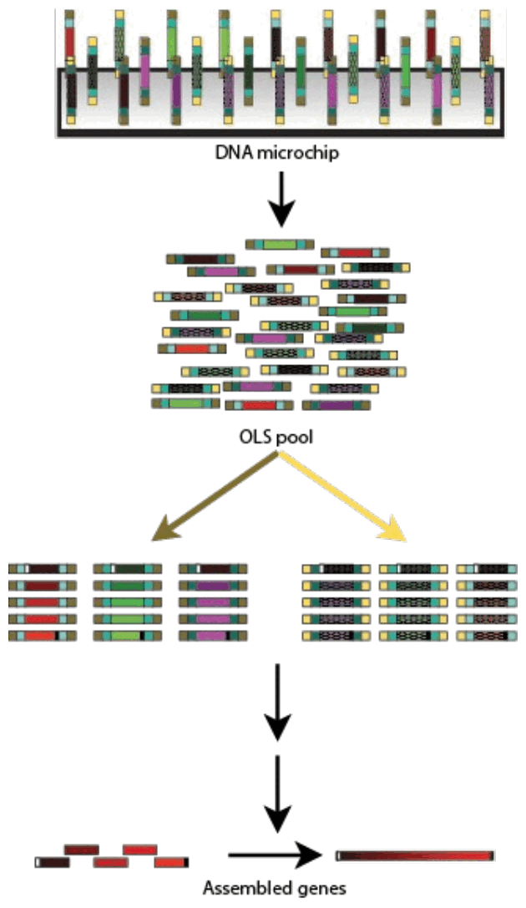

or more generally Site Saturation Variant Libraries (Twist)
An alanine scan is used to identify important residues in a protein. Here, you make the set of all possible alanine mutations to a gene. For a 300 amino acid protein, there would be 300 such alanine mutants. Traditionally a set of mutants is constructed by site-directed mutagenesis methods like QuickChange. Twist now has library products where you directly purchase a library like this synthesized from a bunch of oligos. It is cheaper than making each mutant explicitly because of extensive oligo reuse. It also doesn’t have to be alanine—it could be any or all of the other 19 amino acids for the site. Ultimately, this results in an equivalent library to error-prone PCR, in the sense that it is a library of single missense mutants. However, it is going to be better quality and better coverage, and more complete. The same parent gene and stack of four copies, but now each copy carries exactly one mutation mark, and the mark steps from left to right as you read down the stack.
agilent.com
https://www.agilent.com/en/solutions/genomics-applications-solutions/ols Every library so far has been made from DNA you already had in hand, whether that is a gene you cloned or a genome you extracted. From here on the library gets written from scratch, and an oligo pool is where that starts. What makes a pool different from ordering a tube of primer is that you are making an enormous number of different sequences and almost none of each. Agilent pioneered doing it by printing: inkjet heads deposit the phosphoramidite chemistry onto a glass surface, one spot per sequence, much the way a microarray is made. Twist runs the same chemistry but miniaturizes it into wells etched in a silicon chip, which cuts the reaction volume by orders of magnitude and fits far more sequences onto one wafer. Either way you end up with a single tube holding tens of thousands of distinct sequences at a fraction of a femtomole each, which is why the first thing you ever do with a pool is amplify it. A drawing of an inkjet-style synthesizer: four reservoirs labelled A, C, T and G feeding print nozzles that deposit spots on a plate, with a close-up of the nozzles and of the growing oligos.Specifications
| Oligo Length | Up to 300nt |
|---|---|
| Oligo Pool Size | No limits on pool size |
| Yield | >0.2 fmol average of each oligo |
| Uniformity | >90% oligos represented within <2.0x of the mean |
| Error rate | Up to 1:3000 |
| Turn-Around Time | As few as 3 days* |
| Price | Industry-leading pricing |
twistbioscience.com
https://www.twistbioscience.com/products/oligopools?utm_content=kwd-504223262862&utm_source=google&utm_medium=cpc&utm_campaign=PSR-GLBL-FY21-1808-MULTI-Branded&adgroup=114820227583&utm_term=twist%20oligo&creative=491329828705&device=c&matchtype=b&location=1013585&gad_source=1&gclid=Cj0KCQjwztOwBhD7ARIsAPDKnkBIa0oPvCKfDXsFKpe_jK_fgixvaNG1niHMkagocmBnsMglxgY0pnoaArTkEALw_wcB&tab=oligo-pools Many of these products (IDT, Twist, Agilent, Synbio Technologies) have oligos up to 300 nt with good quality. That is not long enough to directly encode most proteins, but genetic elements like promoters, terminators, CRISPR guide RNAs, siRNAs, etc can all be made directly this way. You use the product typically as template for PCR, then clone the library or do something else in vitro. A seven-row specification table, the label at left and the value at right: oligo length, up to 300 nt; oligo pool size, no limits; yield, above 0.2 fmol average of each oligo; uniformity, over 90 percent of oligos within 2-fold of the mean; error rate, up to 1 in 3000; turnaround time, as few as 3 days, with an asterisk that has no footnote on the slide; price, industry-leading pricing.
PMID: 21113165
What’s new in this library fabrication domain is next-gen gene synthesis. Most strategies begin with a custom DNA microarray onto which around 55,000 oligonucleotides have been printed. The oligos are sheared off the chip and collected as a single sample referred to as an OLS library. There are several different protocols for assembling these oligos into full-length DNAs, but in general they are similar in setup to Ligase Chain Assembly and Polymerase Chain Assembly, which we’ve talked about before. Here we illustrate one of the methods developed within the Church lab by Sri Kosuri. The power of next-gen synthesis is that you get to write around 1000 genes, and it is possible to make them assemble all in one pot without the use of robotics. So, you can write large libraries of designer genes using these microarrays. This isn’t something you can buy directly as a product, but you can buy the oligo pools and do it yourself. There have been multiple improvements to the protocols over the years. A pipeline running down the slide: oligos printed on a DNA microchip, sheared off into an OLS pool, split into two subpools, then assembled into full-length genes.